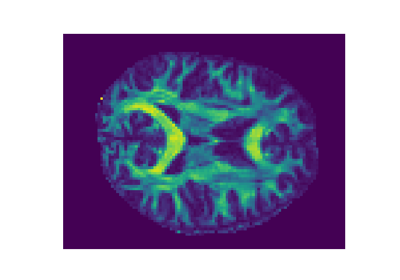
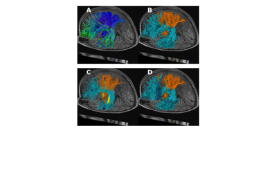

Tutorials: getting started with the pyAFQ Python library#
These tutorials provide a walk-through of basic pyAFQ usage and some more advanced use-cases. Each one of these pages contains code that users can run from top to bottom. The code will download the data necessary to run the tutorial, and will save results as it goes along.

Getting started programming with pyAFQ
Getting started programming with pyAFQ


Visualizing AFQ derivatives